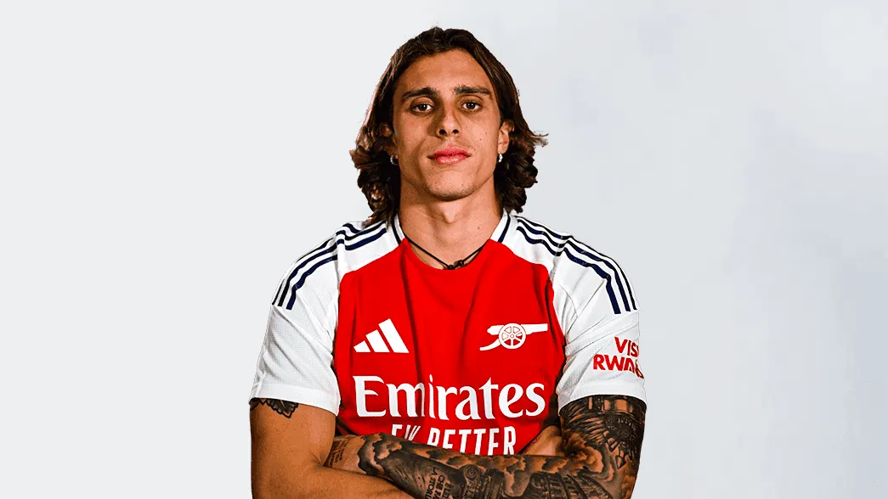

Arsenal Encyclopedia
Home
Players
Coaching Staff
2024/25 Schedule
Club Records
History
Contact
Select a Position:
All Players
Goalkeepers
Defenders
Midfielders
Forwards
#22 David Raya
#32 Norberto Neto
#2 William Saliba
#3 Kieran Tierney
#4 Ben White
#6 Gabirel Magalhães
#12 Jurrien Timber
#15Jakub Kiwior
#17 Oleksandr Zinchenko
#18 Takehiro Tomiyasu

#33 Riccardo Calafiori
#5 Thomas Partey
#8 Martin Odegaard
#20 Jorgihno
#23 Mikel Merino
#41 Declan Rice
#7 Bukayo Saka
#9 Gabriel Jesus
#11 Gabriel Martinelli
#19 Leandro Trossard
#29 Kai Havertz
#30 Raheem Sterling